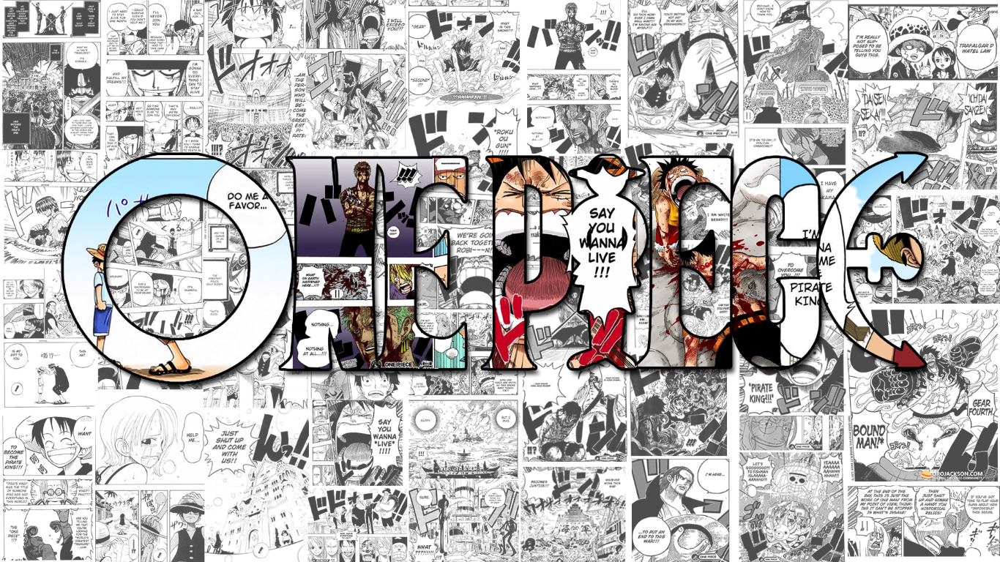

Pasatiempos
Como cualquier persona, en mi tiempo libre me gusta hacer ciertas actividades con el fin de despejar de tener diversión o despejar mi mente, a continuación mencionaré algunos de mis hobbies que hago en mi tiempo de ocio:
-

-

- 
1) Prácticar programación:
Algunas veces en mis tiempos libres me gusta prácticar un poco mis habilidades en porgramación en java, para ello utilizó páginas web como CodeWars, LetCode o CodeChefs.
2) Ir al gimnasio:
Recientemente comencé a ir al gimnasio como una forma de superación personal y con el pasar de las semanas se convirtió en un hábito y una forma de liberar un poco la mente cuando tengo problemas.
3) Escuchar múscia:
Oir música también es uno de mis hobbies, suelo hacerlo cuando estoy en el transporte público o cuando hago ejercicio o tereas que no requieren mucha concentración. Aunque no tengo un genero favorito de música, ya que escucho diversas canciones de diferentes generos, el rock y el rap son los que más suelo escuchar.
4) Ver manga y anime:
En los momentos en los que no tengo nada más que hacer y solo quiero relajarme y pasar un rato agradable suelo ver anime o leer manga, esta es una actividad que me ayuda a desestresarme y no pensar en las cosas malas que hayan sucedido durante el día